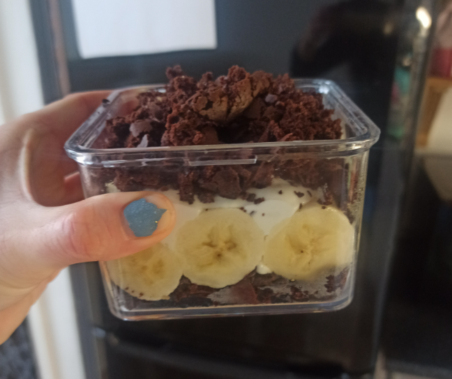

Home
Mole Cake

Description
Fluffy, crumbly Mole Cake, where delicate cocoa sponge cake combines with a creamy cheese-banana filling and crunchy chocolate chips.
Ingredients (3-4 servings)
Base:
- wholegrain spelt flour: 60 g
- baking powder: 5 g
- ghee (clarified butter): 14 g
- cocoa powder: 20 g
- brown sugar: 10 g
- milk: 60 ml
- egg
- pinch of salt
Cream:
- fat-free Greek yoghurt: 450 g
- banana protein: 30 g
- chocolate chips: 10-30 g
- sweetening (e.g., vanilla stevia drops)
For decoration:
- bananas: 2 pieces
Steps
- Prepare the base - first, mix the flour with the baking powder, then add all the dry ingredients, followed by the wet ingredients,
and mix everything well.
- Bake the base at 170°C for approximately 8-10 minutes, then let it cool.
- In the meantime, prepare the cream by mixing all the ingredients and slice the bananas into rounds.
- Once the base has cooled, crumble it and layer it in glasses: base, banana, cream, base.